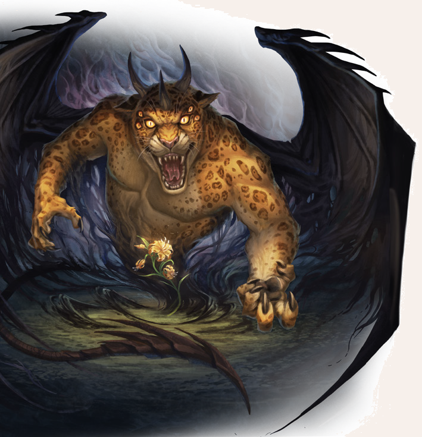

Kah-Thurak-Arfai, der Nachtdämon, ist einer der gefürchtetsten Dämonen, dessen Name nur hinter vorgehaltener Hand ausgesprochen wird. Er ist zwar nur ein dreigehörnter Diener Agrimoths, doch an Gefährlichkeit und Boshaftigkeit steht er auch Dämonen mit deutlich mehr Hörnern in nichts nach. Tagsüber ist er kaum zu erkennen, da er sich in die Blüte der Jaguarlilie, einer gelben Blume mit schwarzem Fleckenmuster, zurückzieht. Die Blume ist durch die Magie des Nachtdämons geschützt und wird von einem Betrachter als schön und ungefährlich eingestuft. In der Nacht zeigt Kah-Thurak-Arfai sein wahres Gesicht: Er erscheint als aufrecht gehender, mehr als vier Schritt großer Jaguar mit mächtigen Krallen und einem stachelbewehrten Schwanz. Sein Rücken wird von zwei riesigen, ledrigen Schwingen geziert, mit denen er schnell wie ein Drache fliegen kann. Auf seinem Haupt trägt er drei Hörner wie eine Krone. Sehr selten zeigt er diese Gestalt auch am Tag, wenn er aus seiner Blume vertrieben oder zu einem anderen Ort gerufen wird. Dann agiert er aber sehr träge und wirkt bisweilen desorientiert.

Kah-Thurak-Arfai
Größe: 3,80 bis 4,20 Schritt
Gewicht: kein Gewicht
Eigenschaften:
MU 22
KL 10
IN 15
CH 12
FF 13
GE 17
KO 18
KK 23
LeP: 200*
AsP: -
KaP: -
INI: 22+1W6
SK: 7
ZK: 7
GS: 5/15 (am Boden / in der Luft)
VW: 11
Krallen:
AT: 19
TP: 2W6+8
RW: mittel
Schwanz:
AT: 16
TP: 1W6+6
RW: lang
RS/BE: 10/0
Aktionen: 3
Vor- und Nachteile: Dunkelsicht II
Sonderfertigkeiten: Finte I-III,
Kampfreflexe I+II,
Mächtiger Schlag (Krallen, Schwanz),
Schwanzschwung (Schwanz),
Verbessertes Ausweichen I+II,
Wuchtschlag I-III (Schwanz)
Talente:
Klettern 6 (22/17/17),
Körperbeherrschung 8 (17/17/18),
Kraftakt 10 (18/23/23),
Schwimmen 0 (17/18/23),
Selbstbeherrschung - (Probe gelingt automatisch),
Sinnesschärfe 8 (10/15/15),
Verbergen 7** (22/15/17),
Einschüchtern 16 (22/15/12),
Willenskraft - (Probe gelingt automatisch)
Anzahl: 1
Größenkategorie: groß
Typus: Dämon (gehörnter, Agrimoth), humanoid
Kampfverhalten: Der Kah-Thurak-Arfai ist eine Tötungsmaschine, die gerne mit Finten ihren Gegner täuscht und ihn dann mit seinen Krallen zerfetzt.
Wenn er sich vorher einen Spaß mit seinen Gegnern machen will, bringt er sie mit seinem Schwanzschwung zu Fall und macht sich dann über sie her.
Der Dämon nimmt es gerne auch mit zwei oder drei Gegnern gleichzeitig auf.
Flucht: flieht nicht
Zauber: Horriphobus 12, Pandaemonium 12 (in dämonischer Tradition)
Anrufungsschwierigkeit: -5
Beute: keine
Sonderregeln:
*Dämonische Regeneration: Der Dämon erhält pro Kampfrunde 2W6 LeP zurück.
Keine Empfindlichkeit gegenüber gesegneten und geweihten Objekten:
Anders als viele Dämonen, verfügt Kah-Thurak-Arfai über keine Empfindlichkeit gegenüber gesegneten/geweihten Objekten/Waffen der Gegengottheiten seines erzdämonischen Herrn.
Nachtdämon: Am Tag halbieren sich die Werte von INI, AT, VW, TP und RS. Die Sonderregel Dämonische Regeneration ist am Tag ausgesetzt.
**Tarnung: Durch die Farbe des Fells kann Kah-Thurak-Arfai sich in entsprechender Umgebung (Nacht) gut tarnen.
Proben auf Sinnesschärfe (Hinterhalt entdecken oder Wahrnehmen), um ihn zu entdecken, sind dann um -2 erschwert.
Unsichtbarer Schrecken: Einmal in der Nacht kann sich Kah-Thurak-Arfai für 10 KR unsichtbar machen.
Er benötigt dazu eine freie Aktion und erhält dann den Status Unsichtbar.
Dämonen-Regeln: Für Kah-Thurak-Arfai gelten die allgemeinen Dämonen-Regeln.
| LeP-Verlust | Schmerz | |
|---|---|---|
| 38 LeP (¾) | immun gegen Schmerz | |
| 25 LeP (½) | immun gegen Schmerz | |
| 13 LeP (¼) | immun gegen Schmerz | |
| 5 LeP und weniger | immun gegen Schmerz |
| Sphärenkunde | (Sphärenwesen) | |
|---|---|---|
| QS1 | Der Nachtdämon soll eine einzigartige Wesenheit sein. | |
| QS2 | In der Nacht soll noch niemand gegen den Dämon gewonnen haben. Am Tag ist er etwas schwächer - aber dennoch ein tödlicher Gegner. | |
| QS3 | Der Nachtdämon soll sich während des Tages in einer Blume verstecken. |